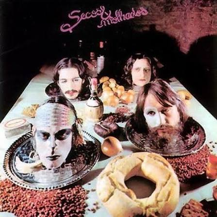

Antes que a Boca Fale
Um projeto de literatura digital que narra uma história tecida entre memória, opressão e resistência nos anos de chumbo, unindo narrativa, música e personagens numa experiência imersiva.
Álbum "Secos e Molhados" e Ditadura Militar
O primeiro álbum dos Secos & Molhados foi lançado em 1973, durante a Ditadura Militar brasileira, período marcado por censura, repressão e perseguições políticas. Após o AI-5, em 1968, essas medidas se intensificaram, restringindo ainda mais a liberdade de expressão. Ao mesmo tempo, o país vivia o “Milagre Econômico”, que divulgava uma imagem de progresso apesar das desigualdades. Nesse contexto, a música e a arte tornaram-se formas de crítica e resistência, usando metáforas e simbolismos para driblar a censura.

Acessar ÁlbumConheça mais sobre os personagens de "Antes que a Boca Fale" abaixo.
Oficial do Exército vindo de uma família influente, Bento esconde um comportamento possessivo e manipulador por trás da imagem de rapaz cortês. Incapaz de aceitar a rejeição e temendo ter sua reputação destruída no batalhão, ele se aproveita do clima de impunidade e autoritarismo da época para silenciar Clara. Encarna o machismo e o abuso de poder institucional.
Jovem de 21 anos, natural de Florianópolis, Clara representa a busca por autonomia em meio à opressão dos Anos de Chumbo. Ao tentar romper um relacionamento sufocante e impor seus limites, torna-se vítima do próprio ex-namorado. Sua trajetória reflete as marcas do trauma, a força da resistência e o apagamento vivenciado por tantas pessoas durante a ditadura militar.
Investigador encarregado do caso em 1974, Neto é um policial obstinado que busca a verdade sobre o sumiço de Clara. Preso entre o dever profissional e a paranoia constante de cruzar o caminho de órgãos como o DOPS, sua investigação expõe a impotência da justiça comum frente à farda e o medo que ditava as regras daquele período.